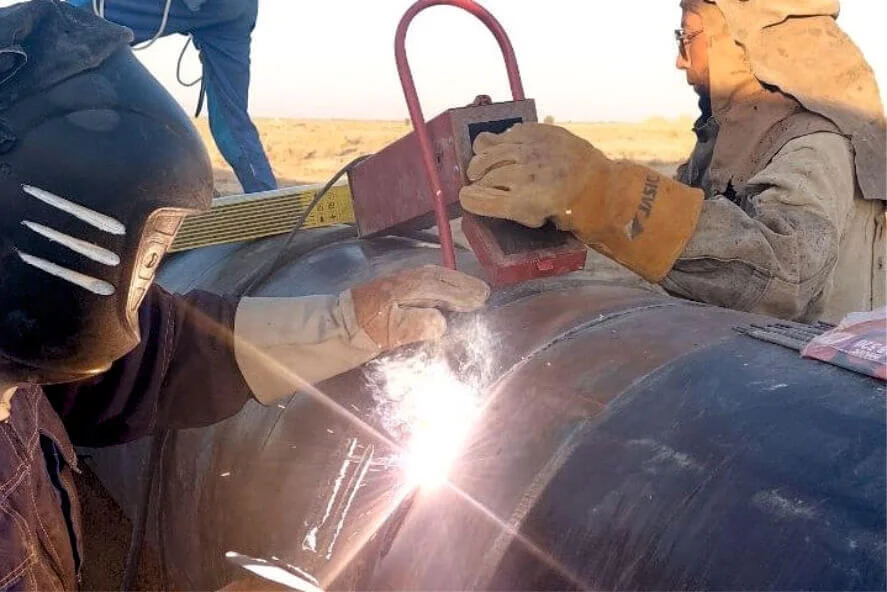
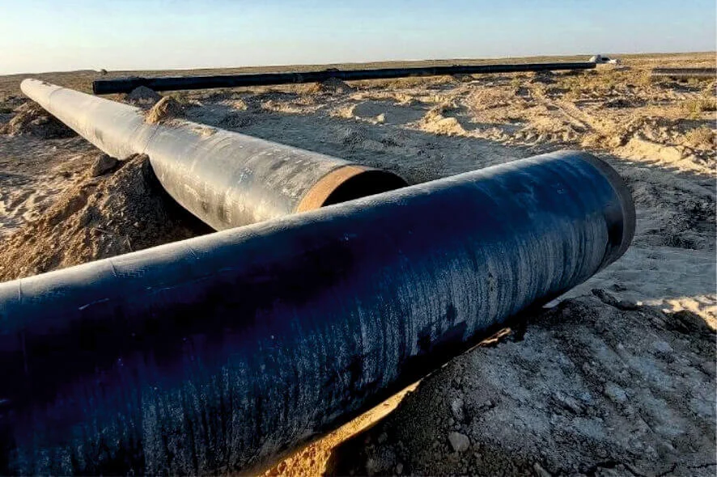

“O‘ztransgaz” AJ “Gazli-Kogon” magistral gaz quvurining IV tarmog‘ining 147-kilometrida ko‘prik qurish ishlarini olib bormoqda. Ko‘prik mazkur gaz quvuri bilan "Muborak-Kogon" magistral gaz quvuri o‘rtasida tiklanadi. Quvur diametri 720x9 mm.ni tashkil etadi. Ayni paytda payvandlash va montaj ishlari davom etmoqda. Bosh pudratchi - NSGD MChJ, subpudratchi esa "SpetsGazElektroPromMontazh" MChJ hisoblanadi.
“Ayollar daftari” bilan manzilli ishlash, mutasaddi tashkilotlar tomonidan xotin-qizlarning muammolarini o‘z vaqtida bartaraf etish ustidan jamoatchilik nazoratini amalga oshirish kabi masalalar ko‘zda tutilganligi alohida eʼtiborga molikdir. Respublika Vazirlar Mahkamasining “Xotin-qizlar muammolarini o‘rganish va hal etish tizimini yanada takomillashtirish chora-tadbirlari to‘g‘risida”gi qarorida ham bu boradagi vazifalar aniq ifodalangan. Ushbu vazifalar ijrosi sifatida tashkil etilgan respublika-seminarida Nizomiy nomidagi TDPU dosenti, PFN R. Abdullayeva tomonidan “Psixologik barqarorlikni oshirish”, “Stressli vaziyatlarda bardoshlilikni oshirish” mavzularida treninglar o‘tkazildi. Ko‘tarinki kayfiyatda o‘tayotgan mashg‘ulotlar juda qiziqarli ma’lumotlarga boy bo‘lmoqda.
